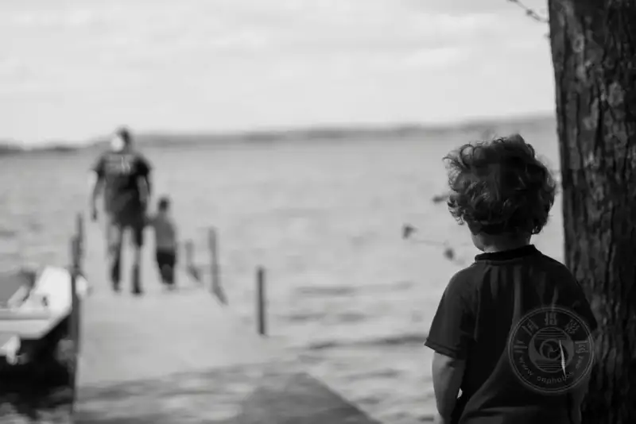
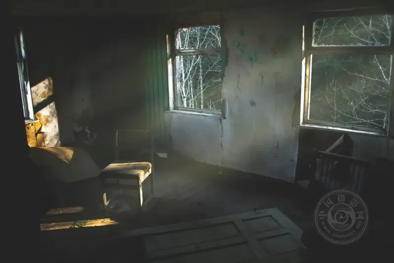
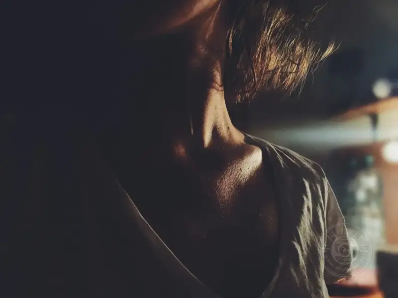
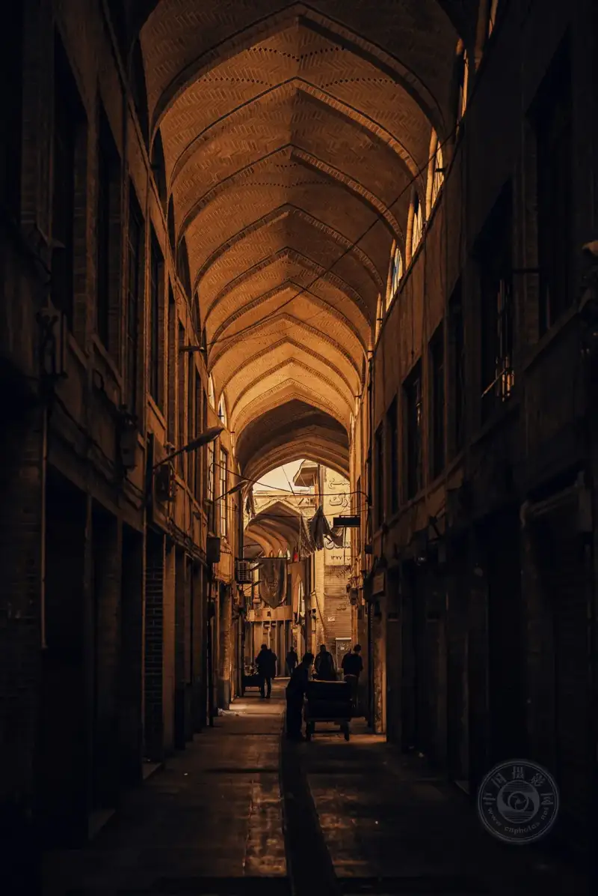
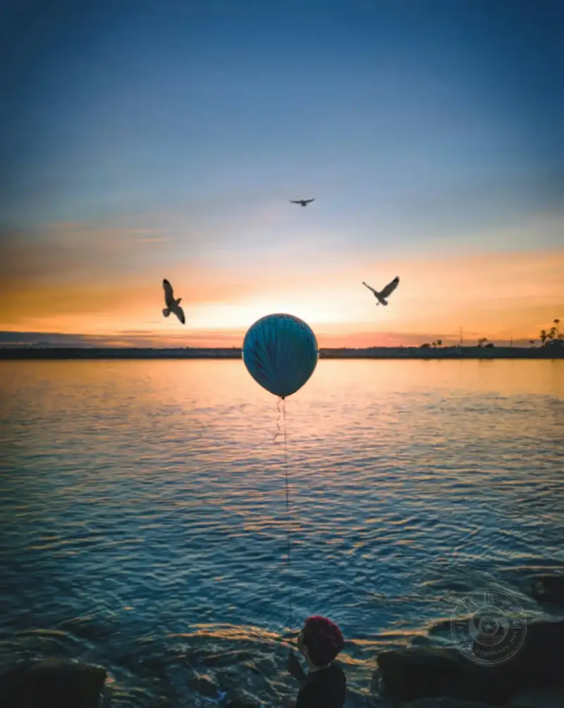
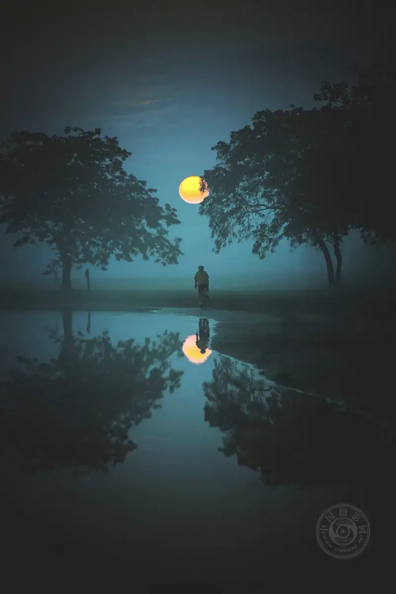
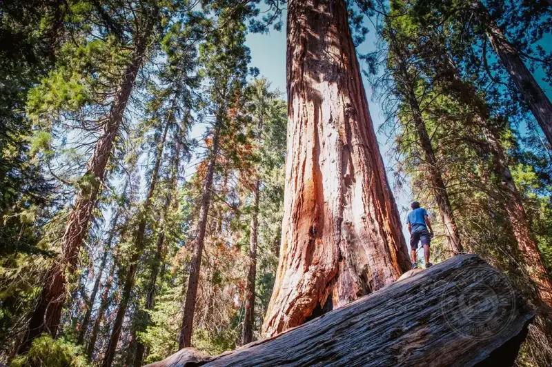
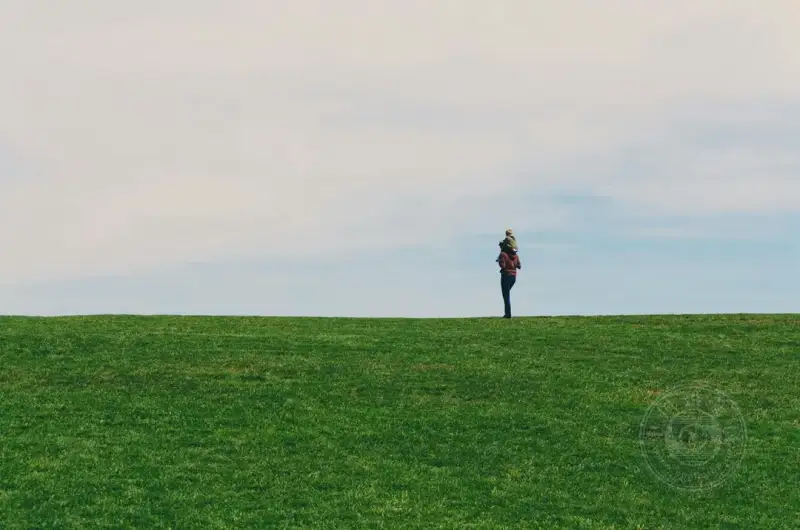
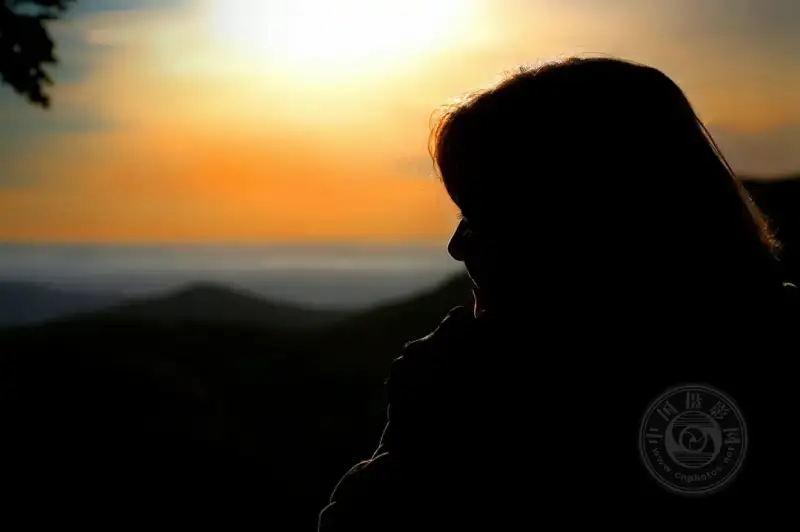
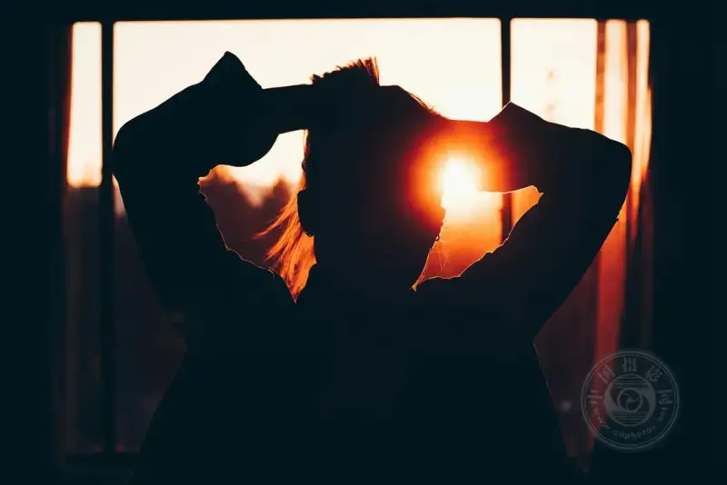

Published: 2024-03-21
Source link: https://www.cnphotos.net/academy/show-166.html
People love drama because it adds passion to a subject. It sparks the imagination and helps people understand the world they meet more deeply. By adding drama to your photos, you help people connect emotionally with your work.
Adding drama to a film or a TV show is easier. How do you add it to a photo? Whether you shoot for yourself or sell your photos, how do you make sure your work has drama when you edit it?
The tips in this guide show you how to add a dramatic mood to your photos, and how to use drama to share emotionally powerful stories that resonate with the viewer.
Create scenes that trigger an emotional response
Some images stir a strong emotion in the viewer at once. Take a photo of a child alone in a parking lot. It sparks the viewer's imagination. They may wonder whether the child was abandoned. They may wonder whether the child is lost, or whether the parents are nearby. A single simple photo tells a powerful story without a word.

© Katherine Chase
Highly dramatic photos are often more exciting and easier to remember. When you build a scene to shoot, ask yourself whether it tells a strong story and makes the viewer feel something, from fear to excitement and beyond. This helps them connect more with your photo.

@ Elias Schupmann
Use darkness
With the right gear, you can use the dark parts of a photo to create drama. People like to see what is around them. By limiting the light, you create shadows in the photo. Because the viewer cannot tell what hides in the dark, those shadows build a sense of wonder and mystery. Adding dark areas, or lighting only the subject and hiding the surroundings, both add drama to a photo.

© Adam Cybulski
Shooting a dark photo alone is not enough. You need light to balance the dark, and this helps the viewer focus on the subject. You can also build contrast in the photo, which also creates drama. If you shoot in sunlight, look for shadows cast by trees or tall buildings. At night, add artificial light, such as lamps and streetlights, to create contrast between light and dark.

© Omid Armin
Motion can be dramatic
Dramatic lighting adds a lot of drama to a photo. Beyond that, catch dynamic action. You may enjoy street or landscape photography, but when you add motion to a photo, you help the viewer connect with it. If you photograph a person walking down the street, the viewer wants to know where the person is going and what their story is.

© Shea Rouda
In a landscape, a woman jogging makes the viewer curious about her and also tells a story. When the viewer sees motion in a photo, the story they imagine adds drama. You can even shoot a short video of the action you want, then break it into single frames. Pick the frame that looks the most dramatic.

© Tony Detroit
Use scale
A good way to add drama is to emphasize scale. For example, if you want the subject to look very large, you are emphasizing scale. Consider adding a second object whose size is well known. If you want to show how tall a tree is, have a person stand next to it. The height of the tree, compared with the person beside it, shows how big the tree is. Here, the person is a reference for the viewer.

© Andrew Jenkins
You can also add drama by putting negative space around the subject. For example, shoot a person standing in a field from a distance. Make sure there are no other objects in the field. This makes the person look small, especially against the surroundings.

© Kelly Sikkema
Add shadows and silhouettes
You can add silhouettes to a photo to create drama. This means the subject looks dark, especially against the background. You can also shoot dramatic portraits with shadows. Instead of a full front portrait of the subject, add shadows to the scene to make it look more dramatic.

© Gary Yost
To add effective shadows and silhouettes, first have the subject stand in front of a light source. Then aim at the subject and lower the exposure. This helps the subject look darker against a bright background.

© Eric Ward
All of these methods add drama to your photos. When you tell a dramatic story through a photo, you help the viewer understand and remember it better.